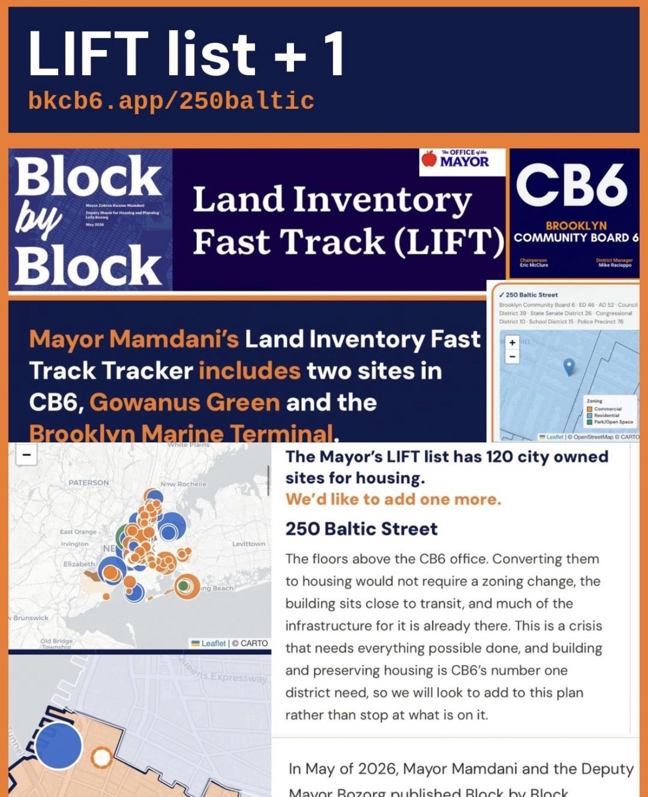
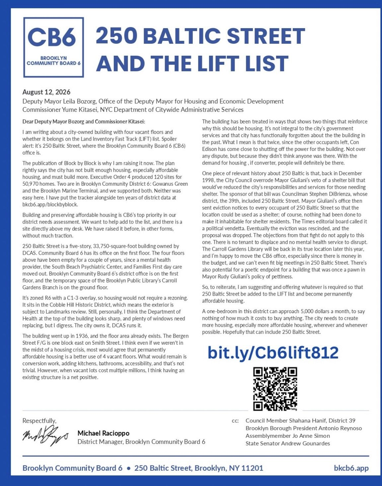

Block, Baltic, Beyond
In May, Mayor Mamdani and Deputy Mayor Bozorg put out Block by Block, the administration’s housing plan. The part that matters most for us is the LIFT list, short for Land Inventory Fast Track: 120 city-owned sites the city has named for…
In May, Mayor Mamdani and Deputy Mayor Bozorg put out Block by Block, the administration’s housing plan. The part that matters most for us is the LIFT list, short for Land Inventory Fast Track: 120 city-owned sites the city has named for housing, 50,970 homes in all. None has been built yet. Two are in CB6, Gowanus Green and the Brooklyn Marine Terminal, and we supported both.
We’ve mapped the whole list so you can see it the way we do: by community board, by council district, by agency, by how far along each site is, and set against what every district actually built over the last decade, how rents moved, and what got rezoned. CB6’s own ten-year record works out to about one new home for every forty people living here, most of it from the Gowanus rezoning. The plan is blunt about why the city is short: the 1961 rezoning cut housing capacity by 80 percent, and the tools that followed were too often used to keep people out of the neighborhoods with the most to offer.

Building and preserving affordable housing is CB6’s number one district need, and a list of 120 is a list that can be 121. So on August 12 I wrote to Deputy Mayor Bozorg and DCAS Commissioner Kitasei asking that they add one: 250 Baltic Street, the building the CB6 office is in. Directly above my desk, in fact.
The case is simple. It’s a five-story, 33,750-square-foot building the city owns and DCAS runs. The four floors above us have been empty for a couple of years, since the South Beach Psychiatric Center program and Families First day care moved out. It’s zoned R6 with a C1-3 overlay, so housing needs no rezoning. It went up in 1936, the floor area already exists, and the Bergen Street F/G is a block east on Smith Street. What’s left is conversion work, kitchens, bathrooms, accessibility, which isn’t trivial, but when vacant lots cost multiple millions, an existing structure is a net positive. It sits in the Cobble Hill Historic District, so the exterior would go through Landmarks; personally I think the Department of Health lettering at the top looks sharp.
The building’s recent history makes the argument for it. Twice since the other tenants left, Con Edison has come close to shutting off the power, not over a dispute, but because they didn’t think anyone was here. A city that has functionally forgotten a building is a city that can afford to put people in it. There is no tenant to displace and no service to disrupt. The Carroll Gardens Library returns to its real home later this year, and I’m happy to move the CB6 office; the money is in the budget, and we can’t fit a big meeting in this room anyway.
There’s older history too. In December 1998, the City Council overrode Mayor Giuliani’s veto of a shelter bill sponsored by Councilman Stephen DiBrienza, whose 39th District included 250 Baltic. The Mayor’s office responded by sending eviction notices to every occupant of the building so it could be used as a shelter, with nothing done to make it habitable for anyone. The Times called it a political vendetta. The eviction was rescinded and the proposal dropped. None of those objections apply now, and there’s something poetic about a building once used as a pawn in a policy of pettiness ending up as permanently affordable housing.

A one-bedroom in this district can approach $5,000 a month, to say nothing of what it costs to buy. The city needs more housing, especially affordable housing, wherever and whenever it can build it. Hopefully that includes 250 Baltic Street. We’ve put the full record for the lot online, zoning and what it allows, ownership, permit history, and what’s around it, along with the letter.
250 Baltic Street, the full card → · Read the letter · See it on Instagram
Take a look, and let me know what you think.
Mike Racioppo, District Manager
Brooklyn Community Board 6 · 250 Baltic Street, Brooklyn, NY 11201
Mike@bkcb6.org